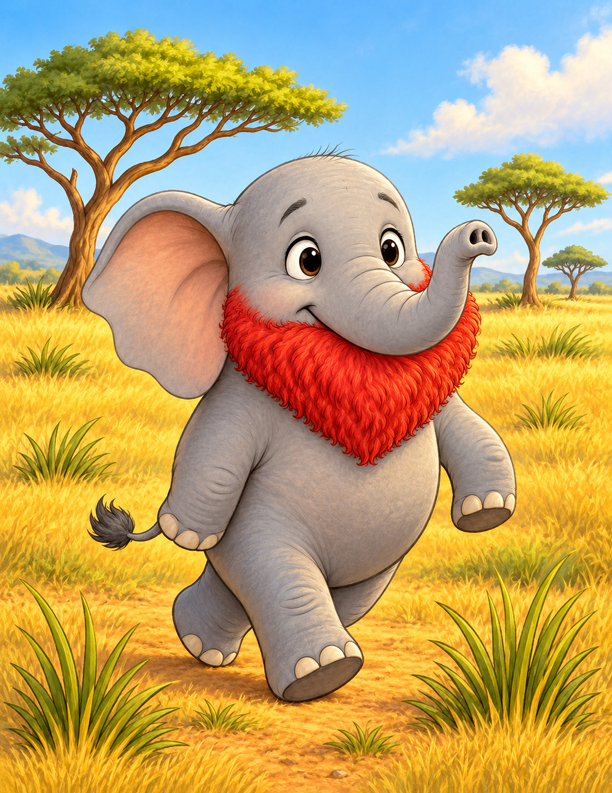

Elijan una juntos. Tilo tiene una pequeña aventura para compartir.

Hay lugar para todaslas emociones.
5–10 minutos · Para hacer juntos · GratisTambién vale elegir una emoción por curiosidad.
Acompañen la lectura y los juegos. Cada persona puede participar, escuchar o pasar; no hay que explicar cómo se siente.
Esta actividad es gratuita y no pide nombres, emails ni respuestas escritas. Las elecciones se reinician al recargar la página.
Cuento, tarjetas y juegos para continuar fuera de la pantalla. Está en preparación; todavía no está disponible para comprar.
Los cuentos de esta mini app son adaptaciones breves de los cinco libros de la Colección Inteligencia Emocional TILO, de Atómica. No reemplazan los libros completos. Las ilustraciones provienen de la edición a color. La edición especial amplía el origen del personaje. TILO invita a conversar sobre emociones; no ofrece terapia ni diagnósticos.